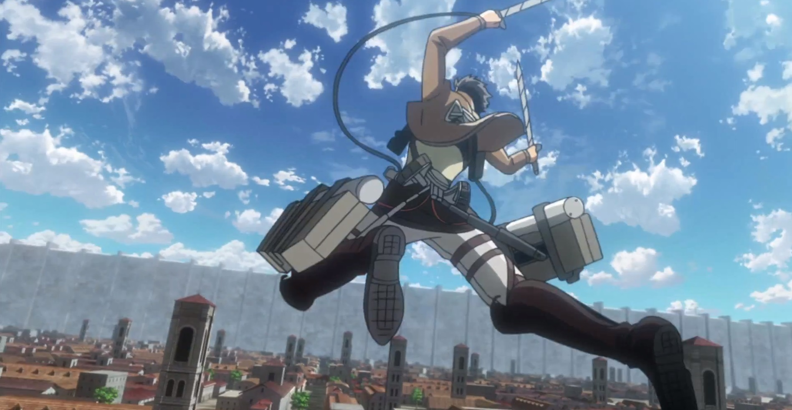

Equipamentos
DMT
O DMT (Dispositivo de Movimentação Tridimensional) é utilizado pelos soldados para ajudar no combate aos titãs. Com ele, é possível utilizar um gás que impulsiona o soldado, fazendo com que ele "voe", assim ele pode chegar a nuca do titã, que é seu ponto fraco, e deferir um golpe com a espada, que também faz parte do conjunto desse equipamento. Além disso, possui também ganchos que podem grudar em objetos.